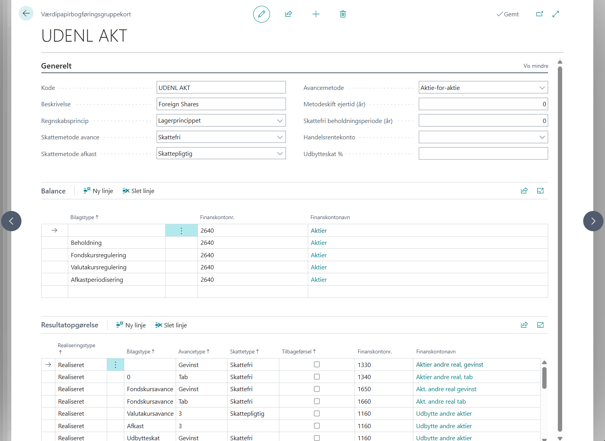
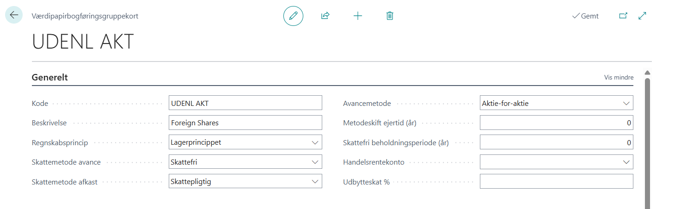
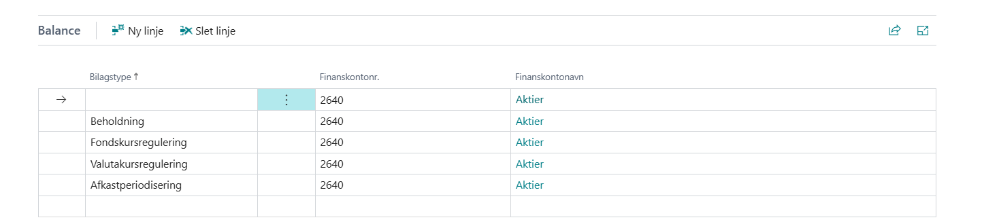
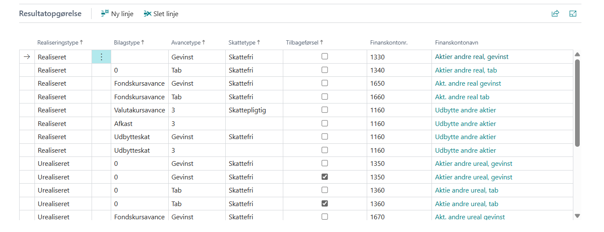

Knyt værdipapirer til finanskonti via balance- og resultatopgørelsesbogføringsgrupper.
Det centrale regnskab i Business Central føres i finansmodulet. Bogføringsgrupper er bindeledet mellem Treasury-løsningen og finanskontoplanen: de fastlægger, hvilke finanskonti der debiteres og krediteres, når der bogføres køb, salg, kursreguleringer og afkast på værdipapirer.
Det anbefales som minimum at oprette én bogføringsgruppe for aktier og én for obligationer, så beholdnings- og resultatkonti holdes adskilt i finanskontoplanen. Det er dog ikke et systemkrav.
Bogføringsgrupper knyttes til det enkelte værdipapir via feltet Bogføringsgruppe på værdipapirkortet.
Kortet har tre dele: fanebladet Generelt med gruppens egne felter, fanebladet Balance med beholdningskontiene og fanebladet Resultatopgørelse med resultatkontiene.

Her definerer du den overordnede opsætning af bogføringsgruppen.

| Felt | Beskrivelse |
|---|---|
| Kode | En unik kode for bogføringsgruppen (op til 10 tegn, tal og bogstaver). Giv gruppen et beskrivende navn, f.eks. AK-DK for danske aktier eller OBL for obligationer. |
| Beskrivelse | Fritekstbeskrivelse af bogføringsgruppen. |
| Regnskabsprincip | Vælg Realisationsprincippet eller Lagerprincippet. Begge kan ikke vælges her — den værdi hører hjemme i Opsætning af Treasury. Er Opsætningen af Treasury sat til ét af de to principper, skal gruppen bruge netop det; er den sat til Begge, vælger den enkelte bogføringsgruppe selv, og en ny gruppe starter på Realisationsprincippet, indtil du ændrer den. Princippet håndhæves ved bogføring: en kladdelinje med lagerprincip-flaget afvises på en bogføringsgruppe sat til realisationsprincippet, og omvendt. |
| Skattemetode avance | Fastlægger Skattetype på de resultatrækker, avancer og kursreguleringer slår op. Valgene er: Blank, Skattepligtig, Skattefri eller Ejertidsbestemt. Ved Ejertidsbestemt afgøres skattetypen pr. købsparti ud fra Skattefri beholdningsperiode (år): partier, der er ældre end perioden, stemples Skattefri, yngre partier Skattepligtig. Er feltet blankt, bruges Skattepligtig. |
| Skattemetode afkast | Fastlægger Skattetype på afkastrækker (udbytte og rente). Valgene er: Blank, Skattepligtig eller Skattefri. Feltet er uafhængigt af Skattemetode avance — et værdipapir kan have skattefri avance og skattepligtigt udbytte. Er feltet blankt, bruges Skattepligtig. |
| Avancemetode | Bestemmer, hvordan anskaffelsessummen beregnes ved salg eller udtræk af værdipapirer. Vælg Gennemsnit, Aktie-for-aktie eller Ejertidsbestemt. Se nedenfor for eksempler. |
| Metodeskift ejertid (år) | Hører til Avancemetode = Ejertidsbestemt og angiver, hvor mange år der skal gå, inden avanceberegningen skifter fra aktie-for-aktie til gennemsnit. Perioden måles pr. købsparti, fra partiets købsdato til salgets bogføringsdato. Feltet skal udfyldes, når avancemetoden er Ejertidsbestemt — ellers afvises bogføringen af salget. Feltet, der styrer skiftet fra skattepligtig til skattefri, er et andet: Skattefri beholdningsperiode (år). |
| Skattefri beholdningsperiode (år) | Antal år et købsparti skal være ejet, før en realiseret avance stemples Skattefri. Bruges kun, når Skattemetode avance = Ejertidsbestemt. Perioden måles fra partiets købsdato til salgets bogføringsdato; er feltet 0, behandles alle partier som Skattepligtig. |
| Handelsrentekonto | Finanskonto til bogføring af handelsrente (i regnskabsvaluta) ved køb og salg af obligationer. Hvis feltet er blankt, bogføres ingen separat handelsrente — handelsrenten skal i så fald være indeholdt i selve handelskursen. |
| Udbytteskat % | Angiv beskatningsprocent for udbytte, hvis bogføringsgruppen bruges til aktier med udbytte. Procenten anvendes af kørslen Foreslå udbyttelinjer til at beregne udbytteskatten ved oprettelse af afkastkladdelinjer. |
Ejertidsbestemt: Metoden vælges pr. købsparti ud fra partiets alder på salgsdatoen. Partier, der har været ejet i mindre end Metodeskift ejertid (år), opgøres efter aktie-for-aktie; partier, der har passeret grænsen, opgøres efter gennemsnit — og det gennemsnit dækker kun de partier, der selv har passeret grænsen. Eksempel med Metodeskift ejertid (år) = 3: køb 1 stk. à 100 kr. for fem år siden, køb 1 stk. à 200 kr. for et år siden, sælg 2 stk. à 250 kr. → det gamle parti giver 150 kr. i avance (250 − 100, gennemsnittet af de gamle partier er her partiets egen kurs), det unge giver 50 kr. (250 − 200).
Her knytter du de fire balancekomponenter til hver sin finanskonto. Bilagstypen siger, hvilken rolle kontoen har i balancen — ikke hvilken slags handel der bogføres. Køb og salg bruger derfor samme række, nemlig Beholdning.

| Felt | Beskrivelse |
|---|---|
| Bilagstype | Valgene er: Beholdning, Fondskursregulering, Valutakursregulering eller Afkastperiodisering. |
| Finanskontonr. | Nummeret på den finanskonto, der skal benyttes for den pågældende komponent. |
| Finanskontonavn | Vises automatisk fra finanskontoplanen. Kan ikke redigeres. |
| Bilagstype | Kontoen bærer |
|---|---|
| Beholdning | Selve værdipapirbeholdningen (aktivet). Debiteres ved køb, krediteres ved salg med den oprindelige anskaffelsessum, og bruges også til begge ben af en overførsel. Bærer desuden modposten til en kursregulering, når kladdelinjen har Lagerprincip = Ja — da lægges reguleringen ind i beholdningen i stedet for at stå særskilt. |
| Fondskursregulering | Modposten på balancesiden til urealiserede fondskursreguleringer bogført uden lagerprincip — det er her, reguleringen står særskilt. Opbygges ved hver kursregulering og nulstilles igen ved salg. |
| Valutakursregulering | Samme rolle for valutakursdelen af en regulering uden lagerprincip. Holdes adskilt fra fondskurslaget, så de to lag kan afvikles hver for sig ved salg. |
| Afkastperiodisering | Tilgodehavendet, der modsvarer et periodiseret (urealiseret) afkast. Bruges, når en afkastlinje bogføres uden modkonto — typisk periodiseret obligationsrente. Ved realiseret afkast går modposten i stedet på kladdelinjens modkonto (banken). |
Kontonumrene bygger på testscenarierne for aktier, men med reguleringskontiene skilt ud.
| Bilagstype | Finanskontonr. | Bemærkning |
|---|---|---|
| Beholdning | 2640 | Værdipapirbeholdning. Bærer også de kursreguleringer, der bogføres med lagerprincip |
| Fondskursregulering | 2641 | Urealiseret fondskursregulering uden lagerprincip |
| Valutakursregulering | 2642 | Urealiseret valutakursregulering uden lagerprincip |
| Afkastperiodisering | (egen konto) | Tilgodehavende renter. Skal være en anden konto end beholdningen; kræves først, når der bogføres periodiseret afkast |
Her knytter du kombinationer af realiseringstype, bilagstype, avancetype og skattetype til resultatkonti. For hver kombination, bogføringen slår op, skal der findes én række.

| Felt | Beskrivelse |
|---|---|
| Realiseringstype | Realiseret — bruges til realiserede transaktioner (salg, udtræk, udbytte). Urealiseret — bruges til urealiserede kursreguleringer (lagerprincippet) og til periodiseret afkast. |
| Bilagstype | Hvilken resultatkomponent kontoen bærer. Valgene er: Fondskursavance, Valutakursavance, Afkast, Udbytteskat eller Overførsel. |
| Avancetype | Underopdeler bilagstypen. Valgene er: Blank, Gevinst eller Tab. Se forklaringen nedenfor — feltet afgør, om beløbet lander på gevinst- eller tabskontoen. |
| Skattetype | Blank — ingen skatteoplysning (bruges til udbytteskat, overførsler og modposten til periodiseret afkast). Skattepligtig eller Skattefri — udledes ved bogføring af skattemetoderne på fanebladet Generelt. |
| Tilbageførsel | Markeringsfelt. Lad feltet stå tomt på de almindelige rækker. Sæt det kun på en ekstra række, hvis tilbageførslen af en urealiseret regulering ved salg skal på sin egen finanskonto — se bemærkningen sidst i afsnittet. |
| Finanskontonr. | Den finanskonto, der benyttes for den pågældende kombination. |
| Finanskontonavn | Vises automatisk. Kan ikke redigeres. |
Avancetypen sættes af bogføringen selv; din opgave er at oprette de rækker, den slår op:
Modposten til et periodiseret afkast er derimod ikke en resultatrække — den hentes fra fanebladet Balance, Bilagstype Afkastperiodisering.
Eksemplet er en aktiegruppe på lagerprincippet, hvor både avance og afkast er skattefri. Kontonumrene følger testscenarierne for aktier.
| Realiseringstype | Bilagstype | Avancetype | Skattetype | Finanskontonr. | Rolle |
|---|---|---|---|---|---|
| Urealiseret | Fondskursavance | Gevinst | Skattefri | 1350 | Urealiseret fondskursresultat |
| Urealiseret | Fondskursavance | Tab | Skattefri | 1350 | — samme konto, tab-siden |
| Urealiseret | Valutakursavance | Gevinst | Skattefri | 1680 | Urealiseret valutaresultat |
| Urealiseret | Valutakursavance | Tab | Skattefri | 1680 | — samme konto, tab-siden |
| Realiseret | Fondskursavance | Gevinst | Skattefri | 1670 | Realiseret fondskursavance |
| Realiseret | Fondskursavance | Tab | Skattefri | 1670 | — samme konto, tab-siden |
| Realiseret | Valutakursavance | Gevinst | Skattefri | 1680 | Realiseret valutaresidual |
| Realiseret | Valutakursavance | Tab | Skattefri | 1680 | — samme konto, tab-siden |
| Realiseret | Afkast | Blank | Skattefri | 1450 | Udbytteindtægt (brutto) |
| Realiseret | Udbytteskat | Blank | Blank | 1455 | Indeholdt udbytteskat |
Opret både en Gevinst- og en Tab-række for hver kurskomponent: hvilken af dem bogføringen rammer, afhænger af periodens resultat, og den manglende række opdages først, når fortegnet vender.
| Realiseringstype | Bilagstype | Avancetype | Skattetype | Bruges til |
|---|---|---|---|---|
| Realiseret | Overførsel | Blank | Blank | Mellemregningskonto ved overførsel mellem to værdipapirer. Brug samme konto i afgivende og modtagende bogføringsgruppe, så de to ben går ud med nul. |
| Urealiseret | Afkast | Blank | (fra Skattemetode afkast) | Indtægtsbenet ved periodiseret obligationsrente. Modposten hentes fra Balance-rækken Afkastperiodisering. |
| Realiseret | Afkast | Blank | (fra Skattemetode afkast) | Renteindtægt på obligationer, hvor afkastet er modtaget. |
Når bogføringsgrupperne er oprettet, skal koden angives i feltet Bogføringsgruppe på hvert enkelt værdipapirkort (fanebladet Bogføring). Uden en bogføringsgruppe kan der ikke bogføres på værdipapiret.